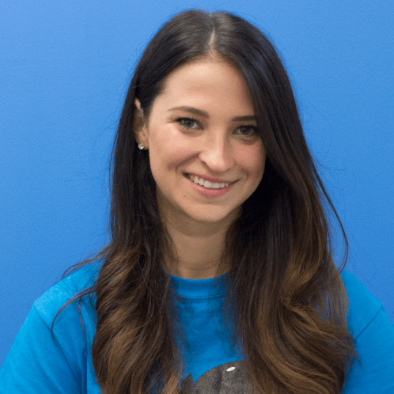

<div class="container">
	<div class="row">
        <div id="speaker-detail" class="col-lg-10 col-lg-offset-1">
            <div class="row">
            	<button title="Close (Esc)" type="button" class="mfp-close">×</button>
                
                <div class="col-md-5 col-lg-5 no-padding">
                    
                </div>
                    
                <div class="col-md-7 col-lg-7">
                    <h2>Hilary<span> Rowe</span></h2>
                    <p class="lead">Sales Development <strong> HeyOrca</strong></p>
                    <ul class="social list-inline list-unstyled">
<!--                     	<li><a href=""><i class="fa fa-2x fa-facebook-square"></i></a></li>
                        <li><a href=""><i class="fa fa-2x fa-twitter-square"></i></a></li>
                        <li><a href=""><i class="fa fa-2x fa-google-plus-square"></i></a></li>
                        <li><a href=""><i class="fa fa-2x fa-linkedin-square"></i></a></li> -->
                    </ul>
                    
                    <div id="content">
                        <p>Hilary completed her business degree in 2017, and joined the pod a month later. Having 5+ years of experience in the sales industry in a corporate environment, she was whaley’ excited to immerse herself in the exciting and challenging startup world. Hilary loves to cook and travel, and dislikes writing in the third person while simultaneously trying to incorporate whale puns.</p>
                    </div>
                </div>
            
            </div>
        </div>
    </div>
</div>